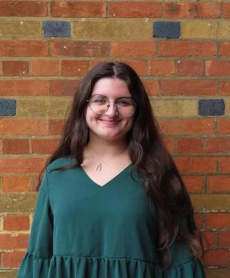

About Me
I am a recent graduate from the University of Massachusetts Amherst who majored in English and minored in Information Technology. Through my studies I’m explored both my creative and technological passions. I further fused these passions with my specializations in the Study and Practice of Writing as well as Professional Writing and Technical Communications, which allowed me to go from studying rhetoric, to developing InDesign skills in a publishing context, to designing HTML portfolios. I also utilized my Commonwealth Honors coursework to explore creative writing where I completed a 50 page collection of personal essays, short stories, and poetry. With experience and passion in both writing and technology, I hope to become a technical writer.
Interested? Feel free to see my work in technology or writing.